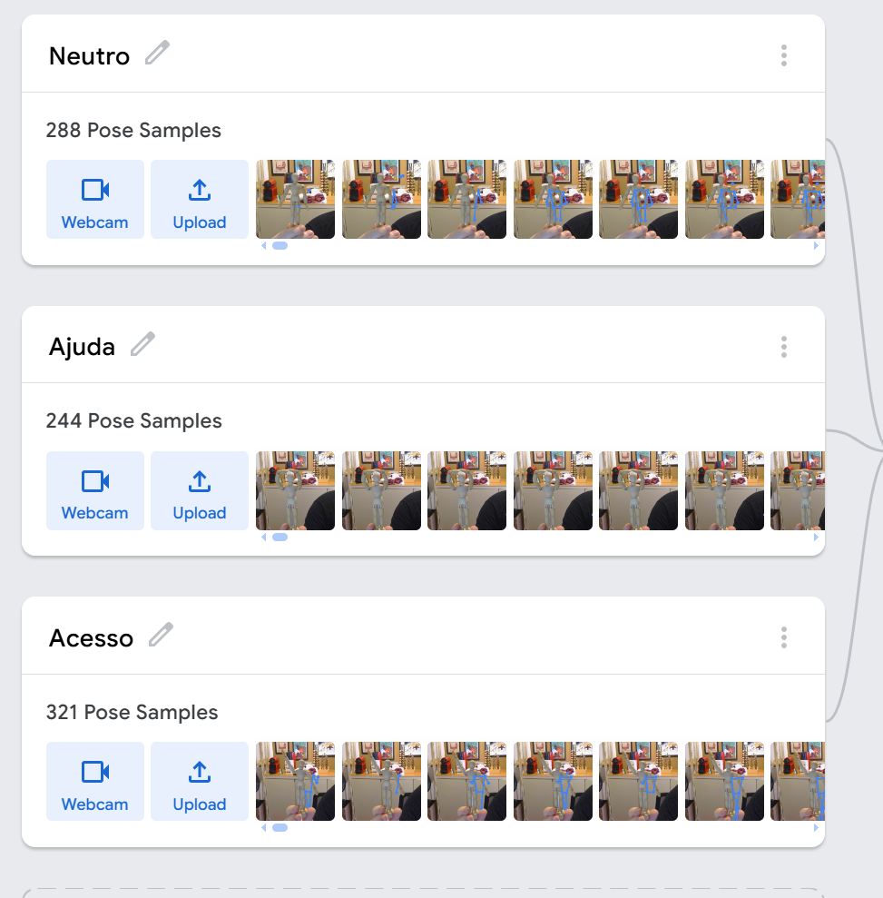

Reconhecendo Padrões! O Detector de Poses
Nesta oficina, os estudantes atuarão como engenheiros de machine learning, treinando uma IA para reconhecer padrões de movimentos corporais específicos. Em vez de utilizar modelos prontos, eles serão responsáveis por todo o ciclo de vida dos dados: da captura e rotulagem ao treinamento e à depuração (debugging). Ao longo do processo, compreenderão como os sistemas aprendem por meio de exemplos e como a qualidade dos dados influencia diretamente os resultados obtidos.
Estrutura da Oficina
Materiais
Lista de materiais/softwares/componentes necessários
Preparar
10 minApresentação
Esta etapa convida os estudantes a assumir o papel de arquitetos de um “cérebro digital”. Diariamente, sistemas de IA reconhecem rostos e poses em filtros. Mas como aprendem a realizar essas tarefas sem intuição humana? Ao longo da atividade, será realizado o treinamento de um modelo capaz de diferenciar uma "pose de vitória" de uma "pose de descanso" com base em exemplos visuais.

helpPerguntas reflexivas
- Se o dispositivo não tem olhos nem cérebro como os nossos, o que ele realmente está “lendo” quando mostramos uma pose para a câmera?
- Seria mais eficiente escrever uma regra manual para cada posição de cada dedo da mão ou apresentar vários exemplos para que a máquina identifique o padrão?
- A IA pode ser “preconceituosa” ou ela reflete a falta de diversidade nas informações fornecidas por nós?
O grande destaque desta oficina é o Aprendizado de Máquina Supervisionado (Supervised Machine Learning), um processo no qual a IA aprende a classificar informações por intermédio de exemplos previamente rotulados por seres humanos.
Diferentemente da programação tradicional baseada em regras fixas do tipo “Se-Então”, o aprendizado supervisionado permite ao sistema identificar padrões estatísticos em conjuntos de dados, ajustando seus parâmetros com base nos exemplos apresentados.
No contexto desta atividade, os dados utilizados serão imagens capturadas pela webcam, compostas de padrões de pixels que representam diferentes poses corporais. Ao rotular essas imagens (por exemplo, “pose de vitória” e “pose de descanso”), os estudantes ensinam o modelo a associar características visuais específicas a determinadas categorias.
Para a etapa prática, será utilizada a ferramenta Teachable Machine (Google Labs) como ambiente de experimentação. Essa plataforma possibilita aos estudantes vivenciar o ciclo completo de um sistema de IA: coleta de dados, rotulagem, treinamento, teste e depuração. A simulação em ambiente digital oferece um espaço seguro para testar hipóteses e compreender que a chamada “inteligência” da máquina não é intuitiva ou autônoma, mas resultado direto da qualidade, diversidade e organização dos dados fornecidos pelos próprios usuários.
tips_and_updatesDicas de condução
Embarque
Nesta atividade, você conduzirá uma dinâmica em roda chamada “O mestre das classes”. A turma será convidada a observar características visíveis e neutras (como óculos, tipo de calçado, manga da camiseta) para tentar descobrir uma “regra secreta” que separa colegas em duas classificações. Com base nisso, os estudantes vão vivenciar, de forma concreta, como padrões são identificados, como se constroem categorias e como isso se relaciona ao modo como sistemas de IA aprendem com exemplos rotulados.
Criar
60 minProtótipo
O Detector de Poses

Refletir
20 minAprendizados
Análise crítica dos modelos treinados
Esta etapa retoma os modelos de pose desenvolvidos ao longo da oficina, com foco na análise de desempenho, generalização e limitações. Em vez de iniciar um novo projeto, a proposta é aprofundar a compreensão sobre como sistemas de IA reconhecem padrões.
Promova um momento de compartilhamento em que as duplas testem os modelos umas das outras, observando diferenças de desempenho. Incentive a análise de questões como: O modelo funciona melhor com quem o treinou? Ele apresenta dificuldades com novas pessoas ou variações de pose? Quais ajustes melhoraram significativamente o desempenho?
Com base nessa análise, conduza uma reflexão ampliada: Se o modelo aprendeu a reconhecer padrões visuais (pixels), seria possível aplicar o mesmo princípio a outros tipos de dados, como sons ou movimentos contínuos? Discuta com a turma que o reconhecimento de padrões não se limita a imagens: ele pode também envolver ondas sonoras, textos ou sinais captados por sensores, sempre dependendo da qualidade e diversidade dos dados fornecidos.
Finalize destacando que o aprendizado de máquina consiste na identificação de regularidades em conjuntos de dados rotulados e que a responsabilidade sobre a qualidade, organização e ética desses dados é humana.
helpPerguntas reflexivas
- Se o modelo reconhecesse apenas pessoas com determinadas características físicas (como usar óculos ou um tipo específico de roupa), de quem seria a responsabilidade por essa limitação: de quem desenvolveu o sistema ou de quem selecionou os dados de treinamento?
- Quando o modelo confundiu as poses nos testes cruzados, quais fatores influenciaram o erro? Como a inclusão de novos exemplos ou a reorganização das Classes impactou o desempenho?
tips_and_updatesDicas de condução
Para ir além
20 minConvide os estudantes a ampliar o projeto, propondo novos desafios para o modelo treinado. Sugira que criem categorias adicionais que envolvam sequências de movimentos (como gestos combinados) ou que adaptem o sistema para reconhecer ações com finalidade prática, como sinais para acender uma luz virtual ou iniciar uma apresentação. Essa ampliação permite explorar a ideia de aplicações reais do reconhecimento de padrões em contextos como acessibilidade, jogos interativos ou automação.
Proponha também que reflitam sobre como a ferramenta utilizada poderia ser aplicada a projetos de impacto social. Oriente-os a imaginar soluções para problemas do cotidiano, como sistemas que auxiliem pessoas com mobilidade reduzida por meio de comandos gestuais ou modelos treinados para reconhecer sinais de pedido de ajuda em ambientes públicos. Estimule a elaboração de pequenos protótipos conceituais, conectando o aprendizado técnico à responsabilidade ética e à criatividade na resolução de problemas.